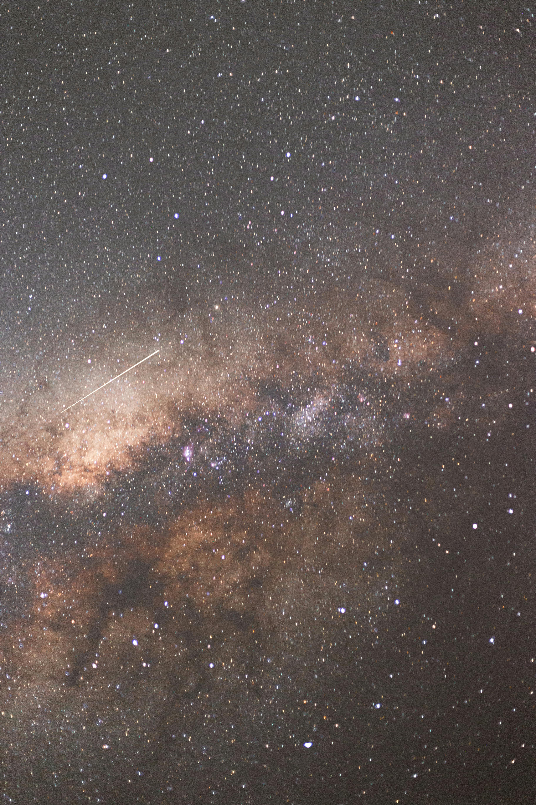

Explore the Milky Way
Welcome to Big Planetarium. We are a Bristol-based planetarium that aims to make learning about space fun, simple, and accessible for everyone.
This website gives an introduction to the Milky Way, one of its most interesting planets, and a small collection of media to make the experience more engaging.

What is the Milky Way?
The Milky Way is the galaxy that contains our Solar System. It is made up of billions of stars, planets, gas, and dust. Earth is only a very small part of it.
Scientists study the Milky Way to better understand the universe, the history of stars, and the possibility of life beyond Earth.